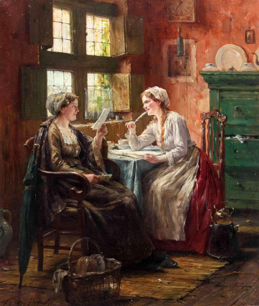

The Ogletree Letters
December 1st, 1940 - Berry Norris to Michael Ogletree
Mr. Norris comments on the state of Ireland and inquires after several people
June 6th, 1842 - John Ogiltree to Michael Ogletree
John writes of inheritance and fire
July 29th, 1842 - Ann Scott, and Windlow Scanlon to Michael and Annabella Ogletree
Updates from everyone in response to the first letter received from Canada
September 4th, 1842 - Ann Scott, Winslow & Elizabeth Scanlon to Michael and Annabella Ogletree
Several deaths, the poor tax, and corn laws
December 22th, 1844 - Henry Ogletree to a former neighbour
A very ecclesiastic missive
December 27th, 1849 - Ann Scott to Annabella Ogletree
Ann's last remittance
March 6th, 1850 - Thomas and Elizabeth Boddy to Annabella Ogletree
Michael Ogletree's death
December 7th, 1850 - Elizabeth and Isaac Boddy to Annabella Ogletree
Sickness and moving
June 7th, 1852 - Anne Scott to Annabella Ogletree
The famine is over
July 10th, 1854 - Elizabeth Scanlon to Annabella Ogletree
Anne Scott's death
February 9th, 1856 - Elizabeth Scanlon to Annabella Ogletree
The cost of land and provisions
February 9th, 1856 - Elizabeth Scanlon to Annabella Ogletree
The cost of land and provisions
February 1st, 1858 - Elizabeth Scanlon to Annabella Ogletree
The failure of banks, and the Indian rebellion
June 10th, 1860 - Elizabeth Scanlon to Annabella Ogletree
Elizabeth's cancer, and the cost provisions
June 24th, 1874 - Francis Scanlon to his cousin Francis
An account of the Scanlon family

Penning a Letter - Edward Antoon Portielje